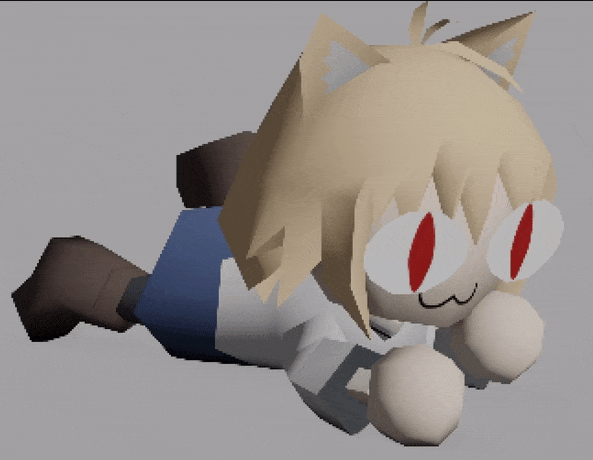

About me.
My work.
BREADSKATE is my main game project right now. It's my first ever game project that I can consider pretty solid as a whole game.
The Demo is available right now on Steam. You can read more about this game on the dedicated page.3D Art stuff.
Breadskate artstyle. I put a lot of effort into forming the unique style of the game. I enjoy working on shaders, color schemes and everything that makes game look nice. After all, visuals are the first thing people see in the game.
3D Animations // ULTRAKILL fan animations. ULTRASKATE was my first time doing an animation, and second video is a quick alternative animation I made a couple months after.
3D Animations // BREADSKATE-Chan skating in Duck City, the third location of the Breadskate game.
Random Signalis memes.
Low Poly PS1/N64 style character models.
cool commissions:
Bomb Rush Cyberfunk stylized character model, VRChat avatar and a Tony Hawks shitpost
Other game design bits.
Unreal Engine 4 blueprints: a predictive projectile turret. Aims at target according to it's movement. Works with multiple turrets - each turret targets its own rocket.
there's some more game design stuff that I'd put here, but it's either lost (thanks to my HDD malfunction in 2021), or boss fights. And since I plan to use those in breadskate, I don't want to spoil it here yet :\